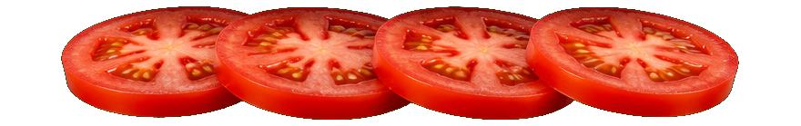
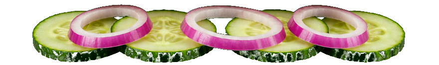
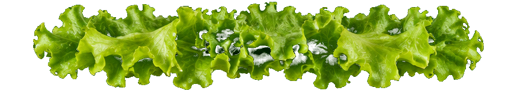
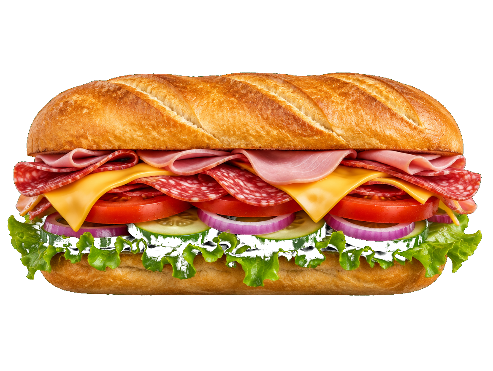

A strategic analysis
Strategies in Sustainable Business
Refocus on cost leadership, built on the franchise network, economies of scale and cost-efficient operations.


Nutritious food, a smaller footprint, a positive influence.

Restaurants as environmentally and socially responsible as possible.

Sustainability is the promise. Franchisees have to deliver it.
We build the strategy the way Subway builds a sub: from the base up.
Refocus on cost leadership
What is happening around Subway?
What is Subway really good at?
Large combined purchasing volume
Perishable produce, many low-volume sites
Simple, low-capex, small-footprint format
Quality and execution vary by store
Many stores, broad delivery coverage
Relies on third-party delivery platforms
Strongest name recognition in its category
"Fresh and healthy" positioning has weakened
Customization is easy and fast to explain
Service quality depends on each franchisee
Who holds the power, and where should Subway go?
Franchisees want profit; they pay for and implement sustainability.
IPC co-ops decide what is bought: eggs, chicken, packaging.
NGOs gain power through campaigns: they pushed cage-free eggs.
Sandwiches are easy to imitate. Subway's advantage should come from what is hard to copy.
Keep prices affordable and protect franchise profitability, with franchisees (NAASF) and IPC in a shared sustainability roadmap.
Subway. Our Commitment. subway.com.
FOX Business (2026). Subway closed over 700 US stores as franchise model faces strain.
Restaurant Business (2026). Subway franchisee group asking for changes to its latest offer.
Circana and franchise disclosure documents (2026), as cited in the Strategy Canvas.
Subway (2026). Preserve Our Planet: Responsible Sourcing.
European Union (2025). Packaging and Packaging Waste Regulation, EUR-Lex summary.
Federal Reserve (2026). The slow climb: how tariffs gradually raised retail prices in 2025. FEDS Notes.
Porter's Five Forces, Value Chain and generic strategies; Barney's VRIO; Mendelow's power/interest grid; Kim and Mauborgne (2004), strategy canvas.
Scores and ratings in the Five Forces, Strategy Canvas and VRIO are the team's assessment.
Diagrams drawn by the group. Photography and packaging images: Turner Duckworth, Subway brand identity case study. Layered and floating sandwich images generated with Higgsfield. The Subway logo and images belong to their owners, shown for academic purposes only.
Strategies in Sustainable Business, EADA Business School. Kira, Maëa, Naud, Joé, Chelsea.